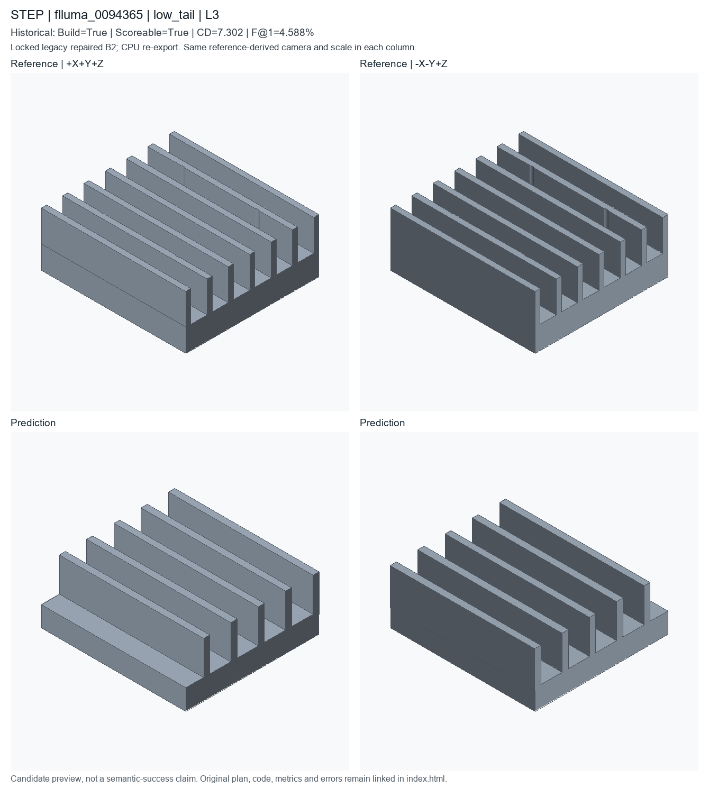

low_tail; L3; historical deployed repaired B2. Candidate status is unchanged.
Nearest complete-scoreable-cohort f1 percentile0.1, then cd percentile0.9; already registered IDs excluded
These are new CPU exports of locked historical code, not newly generated model predictions or recovered original temporary STEP files. Executable does not mean semantically accurate. Historical seed/checkpoint-byte binding remains unresolved.

Input asset: Kernel-derived50-global-statistic descriptor JSON; not a face/edge B-Rep graph. CAD renders above show geometry, not a fabricated point-cloud or descriptor input.
A with an approximate 52.4 by 56.8 by 21.22 mm envelope. A linear ribbed heat sink mount with a 52.4 by 56.8 mm base and 4 mounting holes.
PART flluma_0006000 CAT linear_ribbed_heat_sink_mount UNITS mm SEED 20266514 PARAM height 56.8 MIN 12 MAX 80 SEM overall_height PARAM hole_offset_x 14.79 MIN 4 MAX 44 EXPR width*0.28 SEM hole_spacing PARAM hole_offset_y 14.2 MIN 3 MAX 32 EXPR height*0.25 SEM hole_spacing PARAM hole_radius 1.11 MIN 1 MAX 8 SEM hole_radius PARAM rib_height 14.42 MIN 3 MAX 24 EXPR thickness*1.81 SEM rib_height PARAM rib_step 10.74 MIN 3 MAX 24 SEM rib_offset PARAM rib_width 2.41 MIN 0.8 MAX 5 SEM rib_width PARAM thickness 8 MIN 3 MAX 25 SEM thickness PARAM width 52.4 MIN 20 MAX 120 SEM overall_width F plate_001 OP_PLATE SEM base_plate ROLE primary_body PARAMS height=@height thickness=@thickness width=@width F box_001 OP_BOX SEM rib ROLE secondary_feature PARAMS height=@rib_height length=@rib_width width=@rib_step F translate_001 OP_TRANSLATE SEM placement ROLE secondary_feature DEP box_001 PARAMS offset=[-25.045,0,10.11] F join_001 OP_BOOLEAN_JOIN SEM support_rib ROLE secondary_feature DEP plate_001,translate_001 TARGET plate_001,translate_001 F hole_001 OP_HOLE_PATTERN SEM mounting_hole ROLE functional_feature DEP join_001 TARGET join_001.top_face PARAMS count=4 depth=THROUGH positions=[[-@hole_offset_x,-@hole_offset_y],[@hole_offset_x,-@hole_offset_y],[-@hole_offset_x,@hole_offset_y],[@hole_offset_x,@hole_offset_y]] radius=@hole_radius END
# Literal first40 lines of executed prediction; full program is prediction.py
params = Parameters()
params.add('height', 56.8, min=12, max=80, semantic_type='overall_height')
params.add('hole_offset_x', 14.79, min=4.0, max=44.0, expression='width * 0.28', semantic_type='hole_spacing')
params.add('hole_offset_y', 14.2, min=3.0, max=32.0, expression='height * 0.25', semantic_type='hole_spacing')
params.add('hole_radius', 1.11, min=1, max=8, semantic_type='hole_radius')
params.add('rib_height', 14.42, min=3.0, max=24.0, expression='thickness * 1.81', semantic_type='rib_height')
params.add('rib_step', 10.74, min=3.0, max=24.0, semantic_type='rib_offset')
params.add('rib_width', 2.41, min=0.8, max=5.0, semantic_type='rib_width')
params.add('thickness', 8, min=3, max=25, semantic_type='thickness')
params.add('width', 52.4, min=20, max=120, semantic_type='overall_width')
part = Part('flluma_0006000', category='linear_ribbed_heat_sink_mount', parameters=params, seed=20266514, sample_id='flluma_0006000', units='mm')
plate = part.plate(name='ribbed_mount_base', width=params['width'], height=params['height'], thickness=params['thickness'], semantic_type='base_plate')
box = part.box(name='heat_sink_rib_seed', length=params['rib_width'], width=params['height'], height=params['rib_height'], semantic_type='rib')
moved = part.translate(name='place_first_heat_sink_rib', target=box, offset=[-25.045, 0.0, 10.11], semantic_type='placement')
linear_pattern = part.linear_pattern(name='linear_heat_sink_rib_array', target=moved, count=5, step=[params['rib_step'], 0.0, 0.0], semantic_type='linear_pattern')
join = part.boolean_join(name='join_heat_sink_ribs', target=plate, tool=linear_pattern, semantic_type='support_rib')
holes = part.hole_pattern(name='ribbed_mount_corner_holes', target=join.top_face(), radius=params['hole_radius'], depth='through', positions=[[-14.79, -14.2], [14.79, -14.2], [-14.79, 14.2], [14.79, 14.2]], semantic_type='mounting_hole')
__all__ = ['part']